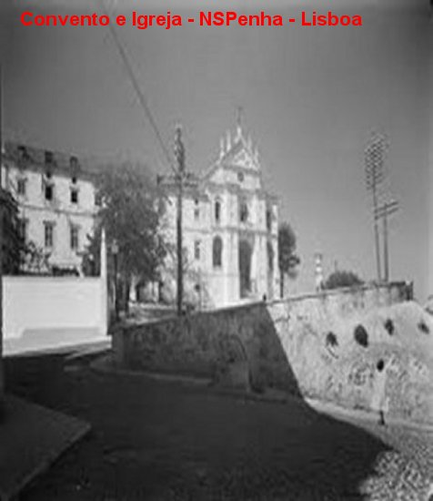
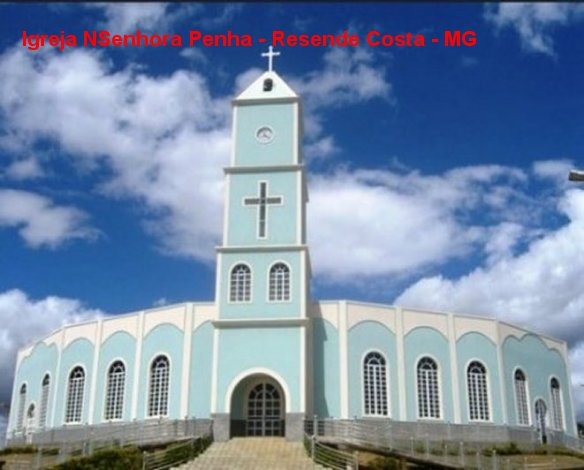
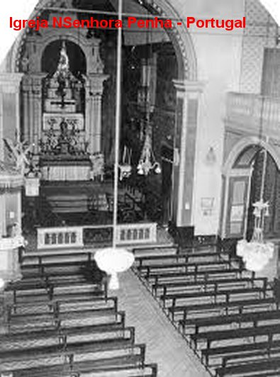
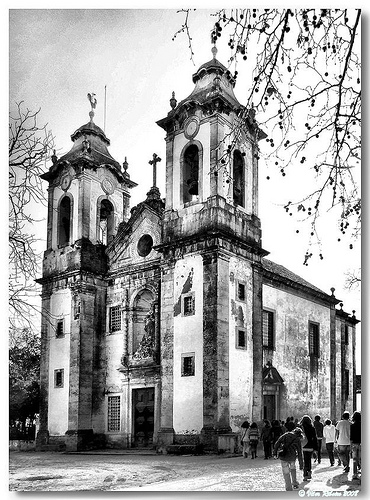
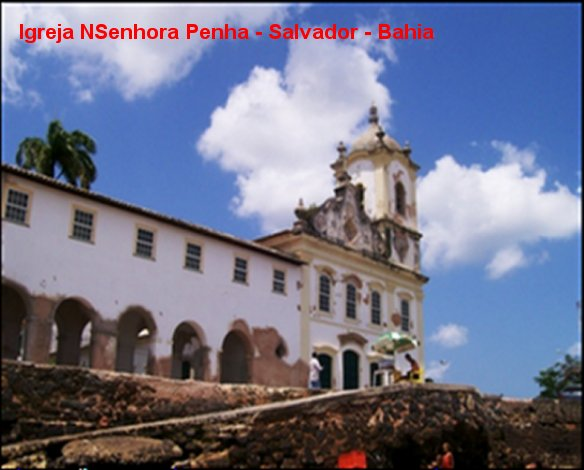
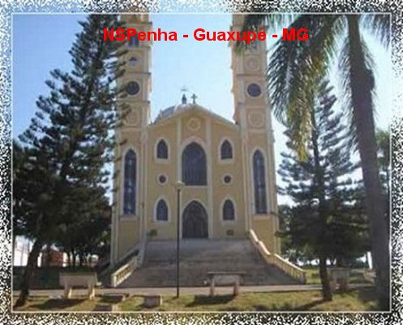
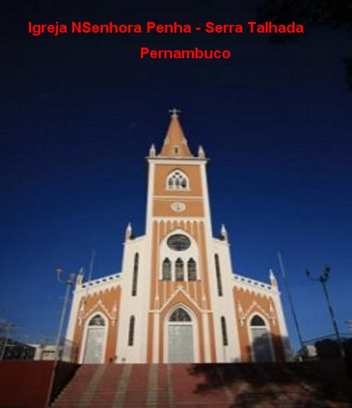
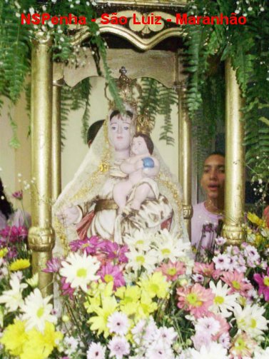

"NOS OUTROS ESTADOS
E NO MUNDO"
NOSSA SENHORA, a MÃE DE DEUS, sob diversas invocações, assim como sob o título “DA PENHA” e “DA PENHA DE FRANÇA”, sempre se manifestou de maneira efetiva e eficaz, revelando a ternura de um amor profundo e materno, como uma mãe carinhosa e preocupada com todos os seus filhos, onde eles estiverem. Todos os adjetivos, mesmo pronunciados com extrema ênfase, para enaltecer as virtudes, qualidades e os dons Divinos de NOSSA SENHORA, se tornam muito pequenos, quase insignificantes, quando comparados com a imensidão da grandeza e a impressionante beleza de seu carinho e da pureza de seu amor de MÃE. Por essa razão, compreendendo a limitação das palavras humanas, e não possuindo um recurso eficaz para expressar o indizível afeto de nossa MÃE SANTÍSSIMA por cada um de nós, nos esforçaremos para deixar gravado aqui nesta página web, mais algumas informações que possam ser úteis a todos que buscam o seu amor.
EM PORTUGAL
O culto a NOSSA SENHORA DA PENHA
começou a ser cultivado logo depois da batalha de Alcácer-Quibir, de tão triste
memória, na qual perdeu a vida o Rei Don Sebastião. Entre os portugueses que conseguiram
escapar da escravidão muçulmana encontrava-se um escultor chamado Antônio
Simões, o qual, quando o combate era mais intenso, percebendo que só se salvaria
por um milagre, prometeu à VIRGEM SANTÍSSIMA fazer-lhe sete imagens se Ela o
conduzisse de volta à sua Pátria. Fiel ao seu voto iniciou o trabalho assim que
regressou a sua casa em Lisboa. Esculpiu com muito carinho e habilidade, seis
imagens diferentes de NOSSA SENHORA retratando seis títulos de seis Aparições.
Ao se preparar para esculpir a sétima imagem, ficou imaginando, qual sugestiva
manifestação da MÃE DE DEUS poderia homenagear naquela sua imagem? Foi
aconselhado por um padre jesuíta a fazer a imagem de NOSSA SENHORA DA PENHA,
cujos milagres eram muito comentados em Castela, na Espanha.
Rei Don Sebastião. Entre os portugueses que conseguiram
escapar da escravidão muçulmana encontrava-se um escultor chamado Antônio
Simões, o qual, quando o combate era mais intenso, percebendo que só se salvaria
por um milagre, prometeu à VIRGEM SANTÍSSIMA fazer-lhe sete imagens se Ela o
conduzisse de volta à sua Pátria. Fiel ao seu voto iniciou o trabalho assim que
regressou a sua casa em Lisboa. Esculpiu com muito carinho e habilidade, seis
imagens diferentes de NOSSA SENHORA retratando seis títulos de seis Aparições.
Ao se preparar para esculpir a sétima imagem, ficou imaginando, qual sugestiva
manifestação da MÃE DE DEUS poderia homenagear naquela sua imagem? Foi
aconselhado por um padre jesuíta a fazer a imagem de NOSSA SENHORA DA PENHA,
cujos milagres eram muito comentados em Castela, na Espanha.
Aceitando a sugestão, o escultor luso executou a obra e a colocou numa pequena Ermida que denominou de Vitória. Mas algum tempo depois resolveu incentivar o povo a colaborar na edificação de uma Igreja em local próximo a Lisboa que era conhecido como Penha de França, motivo por que, também entre os portugueses, a VIRGEM MARIA é conhecida com o título de NOSSA SENHORA DA PENHA DE FRANÇA, embora a imagem seja diferente daquela da Espanha.
Nesta mesma ocasião, uma peste se alastrou terrivelmente em Portugal, e como a Espanha tinha se livrado de um semelhante e cruel flagelo graças à intervenção de NOSSA SENHORA DA PENHA DE FRANÇA, os Senadores de Lisboa prometeram à MÃE DE DEUS que seria construído um grandioso templo, se Ela livrasse a cidade daquela epidemia. A maligna doença foi extinta quase subitamente, e assim, a Câmara honrando a promessa feita, mandou edificar um magnífico santuário naquele local.
O Santuário tornou-se famoso e passou a atrair milhares de peregrinos. Os milagres aconteciam com frequência, testemunhando a poderosa e eficaz intercessão da VIRGEM DA PENHA junto a DEUS, em favor das súplicas de seus filhos. Em certa ocasião um devoto, tendo subido ao alto de uma montanha rochosa, vencido pelo cansaço adormeceu. Uma grande cobra aproximou-se para picá-lo quando surgiu um enorme lagarto que saltou sobre ele e o despertou, antes que a cobra lhe atacasse. Então, pegou o seu bastão e com golpes certeiros, matou a serpente. Por essa razão, em algumas imagens de NOSSA SENHORA DA PENHA DE FRANÇA se vê aos seus pés um peregrino, uma cobra e também um grande lagarto.
NO BRASIL – RESENDE COSTA – ESTADO DE MINAS GERAIS
Antigamente, no século XVIII, formou-se o povoado denominado Lage, naquela região próxima a São João Del Rei. Em 1911 ele ganhou a autonomia de Município e recebeu o novo nome, em homenagem aos inconfidentes, ao Pai e ao Filho, José de Resende Costa.
A Capela foi construída por provisão e inaugurada a 12 de dezembro de 1749. Todos os serviços religiosos eram administrados por diferentes Padres da Diocese que se revezavam no atendimento ao povo local.
Segundo as palavras de moradores e fiéis residentes na cidade, por volta de 1830, o Padre Antônio de Pádua, após cumprir diariamente as suas obrigações religiosas, se dirigia ao casarão da chácara do Dr. Gervásio, onde num determinado cômodo, se dedicava a esculpir uma imagem de madeira da VIRGEM MARIA, e afirmava aos mais íntimos: “é NOSSA SENHORA DA PENHA DE FRANÇA, a Padroeira de Resende Costa”.
No mesmo dia em que iniciou a escultura, com o auxílio de três homens que trabalhavam no sitio, o padre plantou diversas palmeiras na estrada de acesso a chácara, de um lado e de outro, esboçando uma florida e aconchegante passarela. O tempo de trabalho consumido pela escultura foi longo, também por que as horas disponíveis do sacerdote eram poucas, em face de atender diariamente a grande quantidade de fieis do Curato, nas propriedades agrícolas, nos sítios e dentro do próprio lugarejo. No final da obra, que levou anos de cuidadosa, paciente e laboriosa execução, as palmeiras já tinham crescido e ornamentavam de modo magnífico a estrada de acesso à propriedade, como se fosse uma belíssima e formosa passarela arborizada, através da qual uma multidão de devotos conduziu dignamente em procissão a imagem de NOSSA SENHORA DA PENHA DE FRANÇA esculpida pelo Padre, para a Igreja Matriz, onde passou a ocupar o Altar-Mor. Era o agradecimento do sacerdote e de todos os paroquianos, pelas muitas e incontáveis intervenções da VIRGEM MARIA junto a DEUS, alcançando todos os tipos de benefícios e graças em favor de seus filhos.
DIOCESE DE GUAXUPÉ – PASSOS - MG
A devoção a VIRGEM MARIA é muito antiga nesta região. E por isso mesmo, em suas festas tradicionais aflui uma grande quantidade de devotos, que vem prestar suas homenagens a NOSSA SENHORA DA PENHA DE FRANÇA. Esta devoção à MÃE DE DEUS, sempre cresce e é intensificada de maneira constante, em consequência do número de graças alcançadas pelo povo, que embora submetido à perniciosa e degradante influência do modernismo dos costumes, permanecem fieis, cultivando uma sólida amizade com o SENHOR.
A construção do templo aconteceu no ano de 1861, quando proprietários piedosos cederam o terreno para a edificação. O povo cristão se empenhou em diversos tipos de campanhas e assim, conseguiram recursos e puderam construir uma preciosa Capela, colocando-a sob a proteção de NOSSA DA SENHORA DA PENHA DE FRANÇA. Na sequência dos anos, depois de diversas ampliações, a Capela primitiva foi substituída por uma bonita Igreja. Dom Hugo Bressane de Araújo, na época Bispo da Diocese de Guaxupé, decidiu criar a Paróquia, em face do laborioso povo do município e principalmente, pelo interesse e a grandeza da fé dos cristãos da localidade na VIRGEM DA PENHA.
No ato da criação da Paróquia o senhor Bispo a deixou aos cuidados dos Padres Lazaristas. O primeiro pároco foi o Revmo. Senhor Padre José de Oliveira Pires CM, nomeado em 31 de agosto de 1947, no mesmo dia da criação da Paróquia.
A história de Serra Talhada, no
sertão pernambucano do Pajeú, é marcada fortemente pela "presença"
de NOSSA SENHORA DA PENHA, que sempre intercedeu junto a DEUS em favor dos seus filhos
mais necessitados, mergulhados na miséria, no abandono e na falta de instrução,
que viviam na imensidão daquelas terras do sertão.
Nos anos de 1789/1790 foi
erigida pelos escravos uma Capela, entregue a proteção de NOSSA SENHORA DA
PENHA. Com o progresso da localidade, a Capela se transformou numa confortável
Igreja, que serviu como Matriz da Paróquia de 1842 a 1853. Entretanto nesta
mesma ocasião, foi trocado o título da VIRGEM MÃE protetora, para NOSSA SENHORA
DO ROSÁRIO DOS PRETOS, a fim de que aquela Igreja fosse frequentada
exclusivamente pelos escravos. Em 1967, novamente mudaram o titulo do Templo,
mas ainda permaneceu sob a mesma proteção da VIRGEM MARIA, sendo considerada
Matriz da Paróquia de NOSSA SENHORA DO ROSÁRIO.
A cidade de Serra Talhada está
localizada no centro geográfico de onde ocupava a capitania de Pernambuco, e teve o seu
território cortado por dois caminhos, que se cruzam precisamente no local onde
foi erigido o primitivo arraial, de onde então, originou o seu nome: Serra
Talhada (Serra Entrecortada).
E historicamente, a Serra
Talhada sofreu um terrível e abominável período de obscurantismo, motivado
pela total ausência de instrução do povo, alicerçado num analfabetismo
generalizado e na falta de uma catequese bem dimensionada, que lhes ensinasse o
caminho da felicidade espiritual. Esta realidade abriu espaço a uma terrível e
violenta ignorância, a pobreza, aos sequestros, ao roubo e a morte. Ao longo de
trinta anos, um banditismo cruel e exterminador, reinou na região tendo como
núcleo a Serra Talhada, que foi sede do reinado de Lampião e seus cangaceiros.
Entretanto, o maligno
foi eliminado e a região conheceu o progresso e o desenvolvimento. Com o crescimento
da população, no dia 21 de Agosto de 1925, realizaram uma bonita solenidade com
celebração eucarística, na qual participaram autoridades civis e militares e
muitos fiéis. Nesta celebração foi lançada a pedra fundamental da magnífica e
admirável Igreja de NOSSA SENHORA DA PENHA, que hoje além de embelezar a
localidade, mantém aceso o fervor e a esperança na bondade da VIRGEM MÃE, para
que Ela ajude decisivamente na conversão de seus filhos, intercedendo junto a
DEUS em benefício de todos, propiciando-lhes uma proteção segura, para uma vida
produtiva e feliz.
A construção sofreu
as consequências da grande seca de 1930/1932, de modo que prosseguiu lentamente
até 1934. Somente vinte e oito anos depois do assentamento da pedra basilar, no
dia 02 de Agosto de 1953, a magnífica Matriz de NOSSA SENHORA DA PENHA foi
solenemente inaugurada.
SALVADOR – BAHIA
O amor e a
amizade demonstrada pelos moradores locais, sempre foram retribuídos pela
intercessão poderosa de NOSSA SENHORA DA PENHA, que junto a DEUS, alcança para
os seus filhos as graças que necessitam para a caminhada existencial.
SÃO LUIZ – MARANHÃO
NOSSA SENHORA DA PENHA é também
homenageada pelos maranhenses. Em São Luiz tem um simpático e notável templo,
que maternalmente acolhe a todos os seus filhos.
A imagem de NOSSA SENHORA DA
PENHA está com o MENINO JESUS no braço esquerdo e a mão direita estendida segura
um cetro. O cetro é um símbolo do poder de DEUS.
Existe de fato, neste imenso Brasil e no mundo,
uma infinidade de outros templos, Capelas, Igrejas, Basílicas e Santuários, entregues a proteção
da MÃE DE DEUS, sob a invocação de NOSSA SENHORA DA PENHA. A cada um deles humildemente
suplicamos perdão, pelo fato de involuntariamente termos omitido aqui uma
explicita referencia sobre a existência dos mesmos.
       
 Na capital do Estado, a Igreja de NOSSA
SENHORA DA PENHA é uma das seis igrejas da Cidade Baixa construída a beira-mar. O templo
foi edificado em 1742, por iniciativa
do Arcebispo Dom José Botelho de Matos, para o seu uso particular, como uma Capela de
seu palácio de verão. As duas unidades, o palácio e a Capela estavam ligados por uma
área interna totalmente ajardinada, inclusive com apreciáveis palmeiras imperiais. A
Capela foi reformada diversas vezes e hoje é uma confortável e bonita Igreja a
serviço da santificação de seus frequentadores.
Na capital do Estado, a Igreja de NOSSA
SENHORA DA PENHA é uma das seis igrejas da Cidade Baixa construída a beira-mar. O templo
foi edificado em 1742, por iniciativa
do Arcebispo Dom José Botelho de Matos, para o seu uso particular, como uma Capela de
seu palácio de verão. As duas unidades, o palácio e a Capela estavam ligados por uma
área interna totalmente ajardinada, inclusive com apreciáveis palmeiras imperiais. A
Capela foi reformada diversas vezes e hoje é uma confortável e bonita Igreja a
serviço da santificação de seus frequentadores.